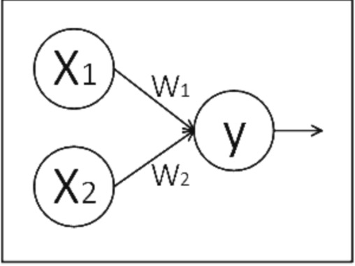
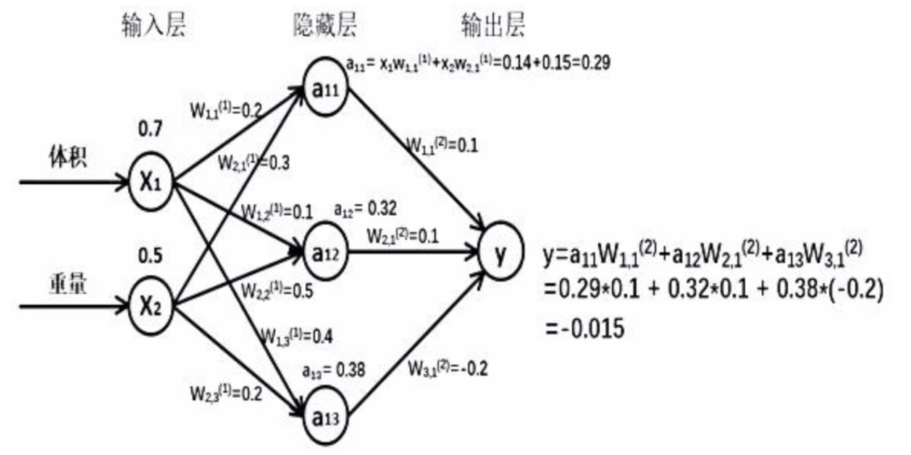
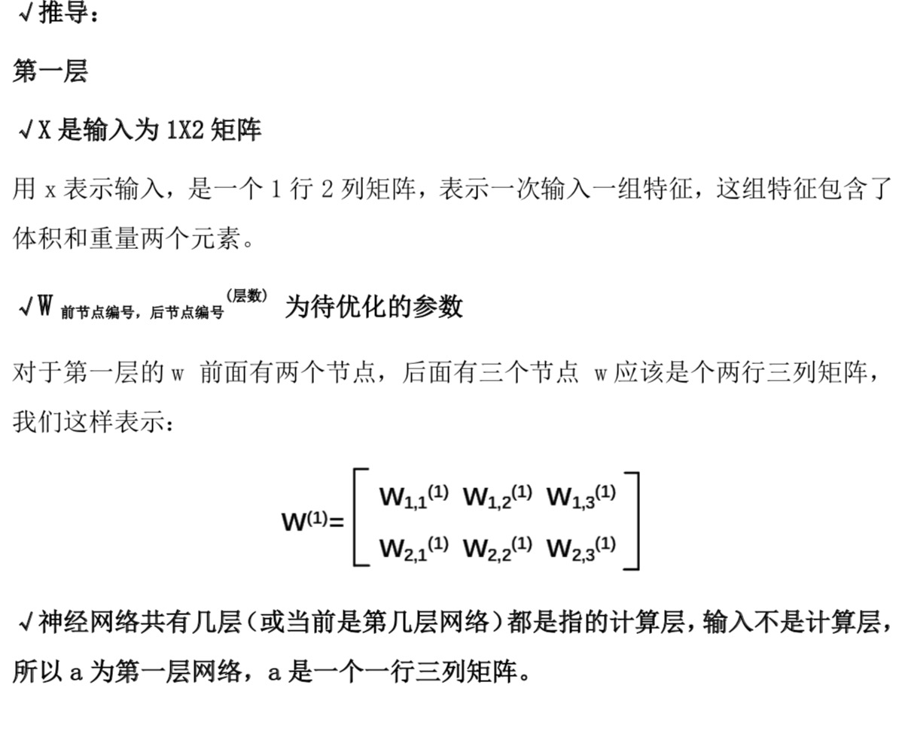
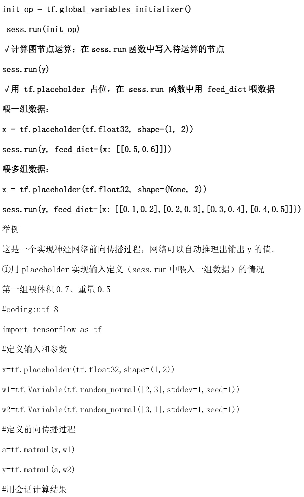
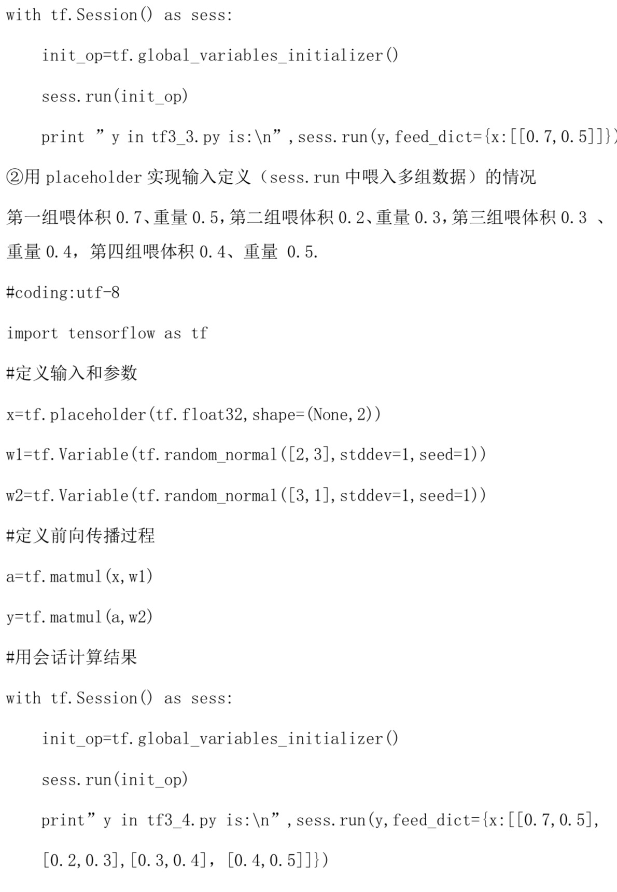
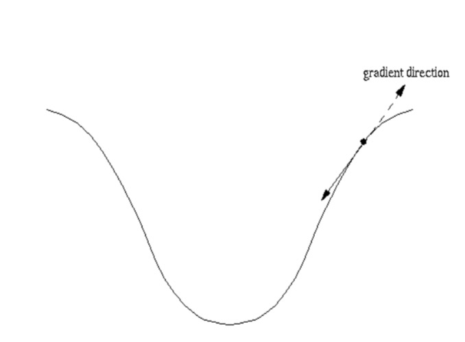
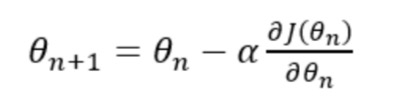
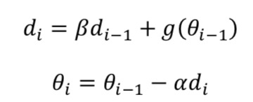
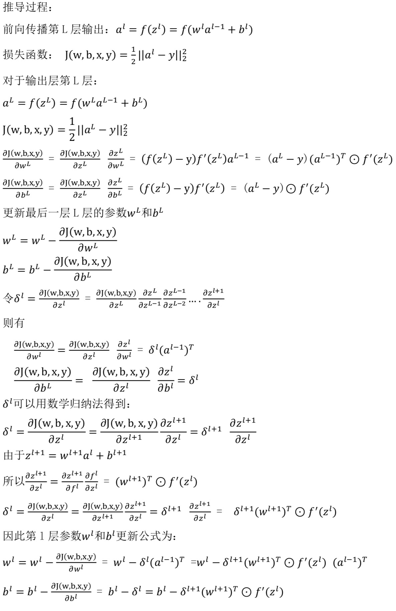

搭建神经网络
3.1
一、基本概念
基于 Tensorflow 的 NN:用张量表示数据，用计算图搭建神经网络，用会话执 行计算图，优化线上的权重(参数)，得到模型。
张量:张量就是多维数组(列表)，用“阶”表示张量的维度。
0 阶张量称作标量，表示一个单独的数; 举例 S=123
1 阶张量称作向量，表示一个一维数组; 举例 V=[1,2,3]
2 阶张量称作矩阵，表示一个二维数组，它可以有 i 行 j 列个元素，每个元素可 以用行号和列号共同索引到;
举例 m=[[1, 2, 3], [4, 5, 6], [7, 8, 9]] 判断张量是几阶的，就通过张量右边的方括号数，0 个是 0 阶，n 个是 n 阶，张 量可以表示 0 阶到 n 阶数组(列表);
举例 t=[ [ [… ] ] ]为 3 阶。数据类型:Tensorflow 的数据类型有 tf.float32、tf.int32 等。
我们实现 Tensorflow 的加法:1
2
3
4
5import tensorflow as tf #引入模块
a = tf.constant([1.0, 2.0]) #定义一个张量等于[1.0,2.0]
b = tf.constant([3.0, 4.0]) #定义一个张量等于[3.0,4.0]
result = a+b #实现a加b的加法
print result #打印出结果
可以打印出这样一句话:Tensor(“add:0”, shape=(2, ), dtype=float32)，意思为 result 是一个名称为 add:0 的张量，shape=(2,)表示一维数组长度为 2， dtype=float32 表示数据类型为浮点型。
- 计算图(Graph):搭建神经网络的计算过程，是承载一个或多个计算节点的一 张图，只搭建网络，不运算。
举例
在第一讲中我们曾提到过，神经网络的基本模型是神经元，神经元的基本模型其 实就是数学中的乘、加运算。我们搭建如下的计算图:

x1、x2 表示输入，w1、w2 分别是 x1 到 y 和 x2 到 y 的权重，y=x1w1+x2w2。 我们实现上述计算图:1
2
3
4
5import tensorflow as tf
x = tf.constant([[1.0, 2.0]])
w = tf.constant([[3.0], [4.0]])
y = tf.matmul(x, w)
print y
可以打印出这样一句话:Tensor(“matmul:0”, shape(1,1), dtype=float32)， 从这里我们可以看出，print 的结果显示 y 是一个张量，只搭建承载计算过程的 计算图，并没有运算，如果我们想得到运算结果就要用到“会话 Session()”了。
- 会话(Session):执行计算图中的节点运算。
我们用 with 结构实现，语法如下:1
2with tf.Session() as sess:
print sess.run(y)
举例
#引入模块
#定义一个 2 阶张量等于[[1.0,2.0]] #定义一个 2 阶张量等于[[3.0],[4.0]] #实现 xw 矩阵乘法
#打印出结果
对于刚刚所述计算图，我们执行 Session()会话可得到矩阵相乘结果:
1 | import tensorflow as tf #引入模块 |
可以打印出这样的结果:
Tensor(“matmul:0”, shape(1,1), dtype=float32)
[[11.]]
我们可以看到，运行 Session()会话前只打印出 y 是个张量的提示，运行 Session() 会话后打印出了 y 的结果 1.03.0 + 2.04.0 = 11.0。
3.2
一、神经网络的参数
- 神经网络的参数:是指神经元线上的权重 w，用变量表示，一般会先随机生成 这些参数。生成参数的方法是让 w 等于 tf.Variable，把生成的方式写在括号里。
神经网络中常用的生成随机数/数组的函数有:1
2
3
4
5
6
7tf.random_normal() 生成正态分布随机数
tf.truncated_normal() 生成去掉过大偏离点的正态分布随机数
tf.random_uniform() 生成均匀分布随机数
tf.zeros 表示生成全 0 数组
tf.ones 表示生成全 1 数组
tf.fill 表示生成全定值数组
tf.constant 表示生成直接给定值的数组
二、神经网络的搭建
当我们知道张量、计算图、会话和参数后，我们可以讨论神经网络的实现过程了。
神经网络的实现过程:
1、准备数据集，提取特征，作为输入喂给神经网络(Neural Network，NN)
2、搭建 NN 结构，从输入到输出(先搭建计算图，再用会话执行)
( NN 前向传播算法 -> 计算输出)
3、大量特征数据喂给 NN，迭代优化 NN 参数
( NN 反向传播算法 -> 优化参数训练模型)
4、使用训练好的模型预测和分类
由此可见，基于神经网络的机器学习主要分为两个过程，即训练过程和使用过程。 训练过程是第一步、第二步、第三步的循环迭代，使用过程是第四步，一旦参数 优化完成就可以固定这些参数，实现特定应用了。
很多实际应用中，我们会先使用现有的成熟网络结构，喂入新的数据，训练相应 模型，判断是否能对喂入的从未见过的新数据作出正确响应，再适当更改网络结 构，反复迭代，让机器自动训练参数找出最优结构和参数，以固定专用模型。
三、前向传播
前向传播就是搭建模型的计算过程，让模型具有推理能力，可以针对一组输入 给出相应的输出。
假如生产一批零件，体积为 x1，重量为 x2，体积和重量就是我们选择的特征，把它们喂入神经网络，当体积和重量这组数据走过神经网络后会得到一个输出。假如输入的特征值是:体积 0.7 重量 0.5

由搭建的神经网络可得，隐藏层节点a11=x1*w11+x2*w21=0.14+0.15=0.29，同理算得节点 a12=0.32，a13=0.38，最终计算得到输出层 Y=-0.015，这便实现了 前向传播过程。



3.3
一、反向传播
反向传播:训练模型参数，在所有参数上用梯度下降，使 NN 模型在训练数据 上的损失函数最小。
损失函数(loss):计算得到的预测值 y 与已知答案 y_的差距。
损失函数的计算有很多方法，均方误差 MSE 是比较常用的方法之一。
均方误差 MSE:求前向传播计算结果与已知答案之差的平方再求平均。
用 tensorflow 函数表示为:
loss_mse = tf.reduce_mean(tf.square(y_ - y))
反向传播训练方法:以减小 loss 值为优化目标，有梯度下降、momentum 优化 器、adam 优化器等优化方法。
这三种优化方法用 tensorflow 的函数可以表示为:
train_step=tf.train.GradientDescentOptimizer(learning_rate).minimize(loss) train_step=tf.train.MomentumOptimizer(learning_rate, momentum).minimize(loss) train_step=tf.train.AdamOptimizer(learning_rate).minimize(loss)
三种优化方法区别如下:
- tf.train.GradientDescentOptimizer()使用随机梯度下降算法，使参数沿着 梯度的反方向，即总损失减小的方向移动，实现更新参数。

参数更新公式是

其中，𝐽(𝜃)为损失函数，𝜃为参数，𝛼为学习率。

- tf.train.MomentumOptimizer()在更新参数时，利用了超参数，参数更新公式
是
其中，𝛼为学习率，超参数为𝛽，𝜃为参数，𝑔(𝜃𝑖−1)为损失函数的梯度。
- tf.train.AdamOptimizer()是利用自适应学习率的优化算法，Adam 算法和随 机梯度下降算法不同。随机梯度下降算法保持单一的学习率更新所有的参数，学 习率在训练过程中并不会改变。而 Adam 算法通过计算梯度的一阶矩估计和二 阶矩估计而为不同的参数设计独立的自适应性学习率。
学习率:决定每次参数更新的幅度。
优化器中都需要一个叫做学习率的参数，使用时，如果学习率选择过大会出现震 荡不收敛的情况，如果学习率选择过小，会出现收敛速度慢的情况。我们可以选 个比较小的值填入，比如 0.01、0.001。
反向传播参数更新推导过程
符号说明:
𝑧𝑙表示第l层隐藏层和输出层的输入值;
𝑎𝑙 表示第l层隐藏层和输出层的输出值;
f(z)表示激活函数;
最后的输出层为第 L 层。

1 | #coding:utf-8 |